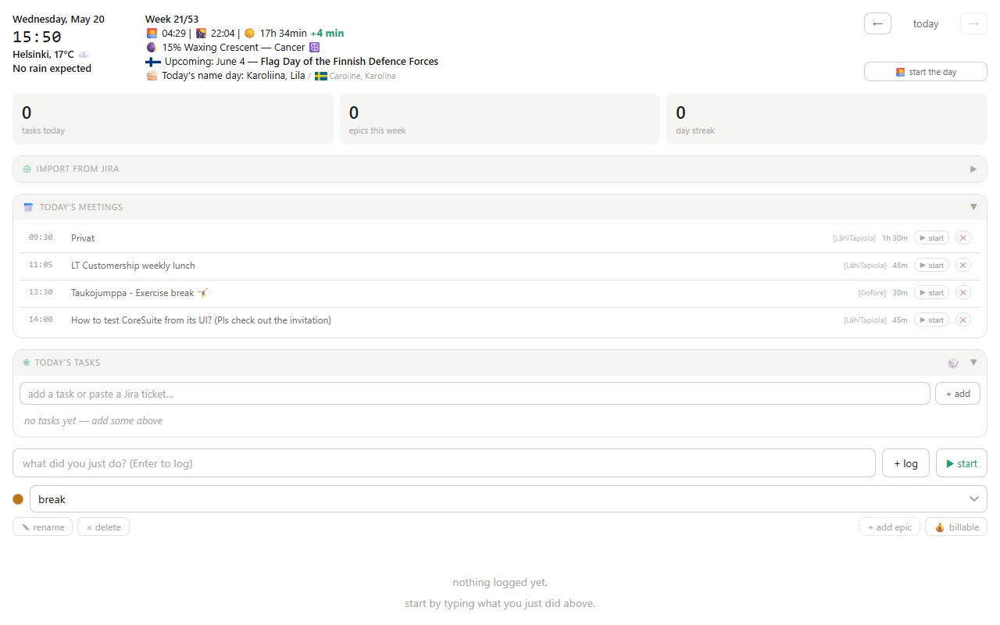
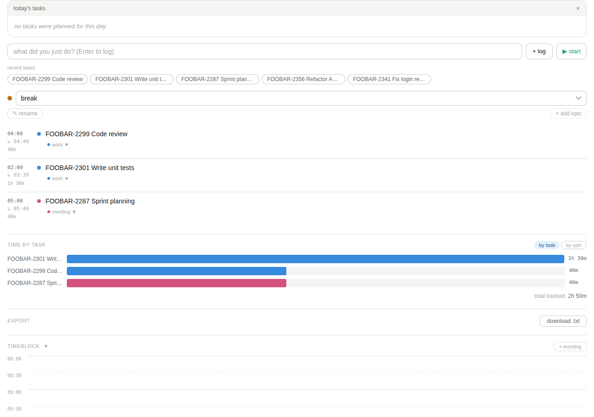
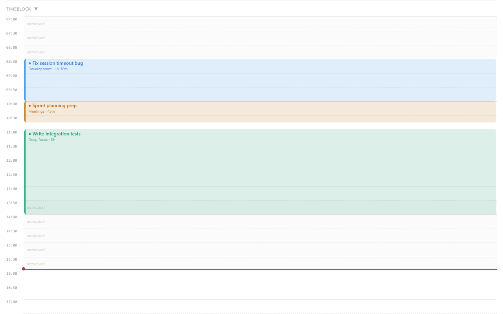
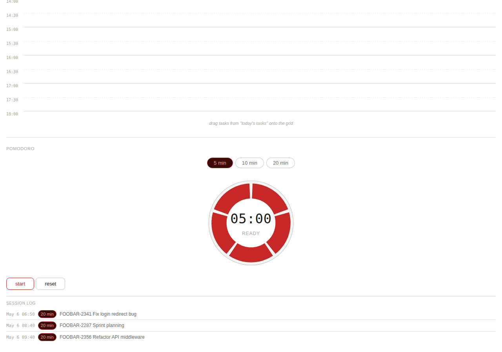
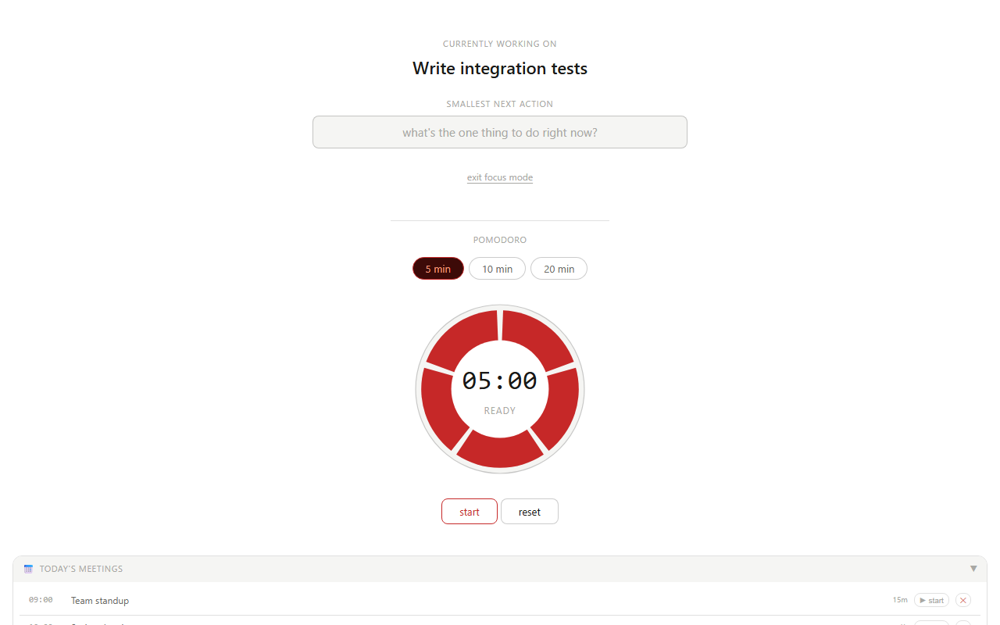

Work Log
ADHD-friendly work tracker — single HTML file, runs locally in your browser.
Screenshots





How to use
Important: The tracker needs to run via a local server (not opened directly as a file) so your data saves correctly between sessions.
Windows
- Download
work-log.html,launch.bat, andstart-server.ps1into the same folder - Double-click
launch.bat - The tracker opens automatically in your browser
Linux / Mac
- Download
work-log.htmlandlaunch.shinto the same folder - Open a terminal in that folder and run:
bash launch.sh - The tracker opens automatically in your browser
Your data is stored locally in your browser — nothing is sent anywhere.
Data lives per-origin, so keep the port stable. Your entries are stored in your browser's
localStorage, which is scoped to the exactorigin:portyou loaded the page from. Both launchers use a fixed port (8080) for this reason — if you ever load the tracker from a different port, your previous data won't show up (it's not gone, it's just stranded on the old port). Reloadhttp://localhost:8080/work-log.htmlto get it back.
Features
Time tracking
- Live timer — start a timer on any task, pause and resume, add a handoff note when stopping
- Billable tracking — mark epics and individual entries as billable; totals shown per task and per day
- Quick pick — recent tasks shown as chips for fast re-logging
- Long-running timer warning — dismissible alert once a running timer passes 4 hours, with a one-click stop; also asks whether to stop if you return to the tab after it's sat hidden 30+ minutes mid-session
Tasks
- Kanban board — drag tasks between To Do / In Progress / Done columns with epic colour coding
- WIP warning — amber highlight and dismissable banner when more than one task is in progress
- Task subtasks — split any task into child steps; completing all steps completes the parent
- Deadlines — date picker with overdue (red) and due-today (amber) highlighting
- Auto-carry — unfinished tasks roll over to the next day automatically
- Jira import — paste a Jira CSV export to bulk-add tickets as tasks
- Weekly plan review — a dismissible checklist appears once a new week begins for any task planned ahead ("upcoming") and dated within it, so you can confirm it's still accurate before the week starts
Today's Flow
- Flow view — chronological feed merging time entries, log notes, and task updates for the day
- Log view — editable time log with duration, epic, billable flag, and ad-hoc entry row
- Proof links & notes — attach a link (Confluence page, Zephyr key, filename, or a URL) and a one-line note to any entry; shown as 🔗/📝 indicators and carried into exports
- Blocks view — visual 08:00–18:00 timeblock grid auto-filled from logged entries; drag to rearrange
- Month view — heatmap of hours per day with intensity colouring; monthly summary and task inventory
- Rolling Summary — AI-ready summary of recent activity across configurable days
Focus mode
- Focus screen — one-click distraction-free view showing only the active task and next steps
- Parked thoughts — capture stray thoughts mid-focus without leaving the screen
- Pomodoro timer — 5 / 10 / 20 min ring timer with session log; visible in focus mode
Planning
- Today's meetings — fetched live from Outlook calendar (Windows); shows time, duration, Teams join link.
Every calendar in every account is read, including secondary calendars nested inside another folder, and
a meeting counts as today's if it overlaps today at all — so multi-day events and meetings that run past
midnight appear too.
✕hides a single meeting for the rest of the day, not every meeting sharing its title. If long-running recurring meetings are missing, raise$CalendarLookBackYearsinconfig.local.ps1(seeconfig.local.example.ps1);http://localhost:8080/api/calendar?debug=1reports what the collector found. - Day streak — consecutive days with logged work
Export & review
- End the day — one-click summary with test areas and tomorrow's notes, exported as .txt
- Auto-backup — JSON backup saved automatically on end-of-day to a local
JSON backups/folder - Reflection — end-of-day focus-quality and energy ratings with an optional note
- Weekly report — copy-to-clipboard draft summarising the calendar week's tracked time grouped by Jira ticket, for writing status updates without reconstructing "what did I touch" by hand
- Gap report — flags this week's finished, billable entries that are missing a note or proof link, with a one-click jump to fix each one
Bullet Journal (BuJo) features
- Rapid logging —
✏️button opens a floating capture panel;Enterstarts the timer immediately - Signifiers — clickable symbol on each entry cycles through meeting / flagged / migrated / cancelled / overtime; cancelled entries are excluded from totals
- Daily Log — tab view merging time entries, log notes, and task updates in a single chronological feed
- Monthly Log — heatmap of hours per day with intensity colouring; monthly summary and task inventory
- Migration — end-of-month close-out flow: carry forward, reschedule, or drop each open task
- Trackers — custom 28-day progress grids with a daily target and streak counter
- Sprints — intention-first focus sessions: declare an outcome, run a Pomodoro, then record yes / partly / no
Info widgets
- Weather — current conditions, rain forecast, sunrise/sunset (Helsinki)
- Moon phase — current phase, illumination %, and zodiac sign
- Finnish nameday — fetched live from nimipaivat.fi
Project documentation
| Document | Purpose |
|---|---|
| ARCHITECTURE.md | Module map, data flow, and design decisions |
| DATA.md | localStorage schema dictionary |
| CONTRIBUTING.md | Dev setup, branching strategy, and quality standard |
| ROADMAP.md | Planned and in-progress features |
| CHANGELOG.md | Full release history |
| QA.md | QA checklist and stakeholder sign-offs per release |
| JSDoc reference | Generated API docs for every exported function, rebuilt on every push to main |
Testing
A smoke test suite is included. Requires Node.js ≥ 22.22.1 (matches engines in package.json — the actual floor imposed by lint-staged's own minimum).
node smoke-tests.cjs
Or double-click run-tests.bat on Windows.
If your environment has a pre-provisioned Chromium binary at a revision Playwright's
own installer can't reach (e.g. an offline sandbox), point the smoke tests at it with
PLAYWRIGHT_CHROMIUM_EXECUTABLE_PATH=/path/to/chromium node smoke-tests.cjs instead of
running npx playwright install.
To schedule tests to run automatically each morning, run schedule-tests.bat once as Administrator.
To set up automated weekly releases every Friday, run setup-scheduler.ps1 once as Administrator.